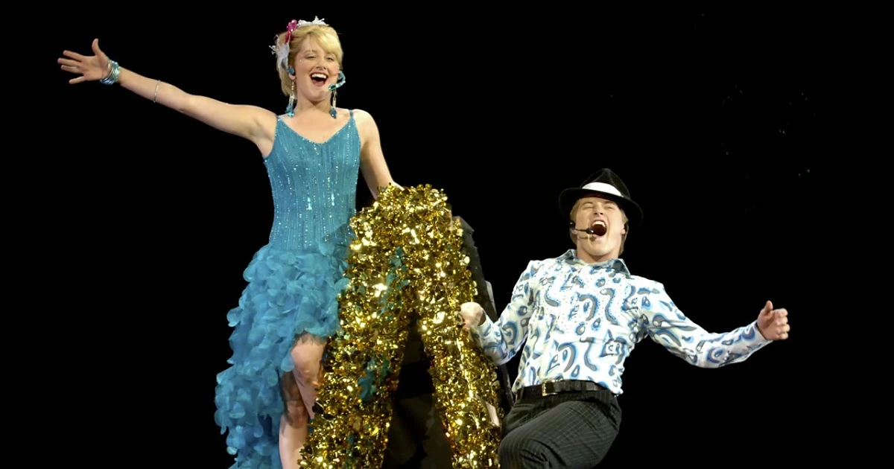

!!! LEELO POST DE VER LOS DEMAS LOL (Si te falta ver expediente oc y glosario musical es recomendable xdddd) Bueno, que no estoy en casa ahora LOL asi que dejo este mensaje, ojala hayan disfrutado de esta pagina yaque mis habilidades de dibujo son nulas LOL LMFAO XD añaskd Ojala hayan interactuado con todo lo de la pagina siendo el reproductor musical, el msn con el zumbnido, la nota en el libro de visitas,etc... :C me acuerdo haber visto hsm muy de chico asi que tengo pocos recuerdos de, pero ojala haber hecho un oc que encaje con el mundo (supongo que alguien que le sepa dira si es acorde o no ) eso, despues veo el vod y tal (o obligo a un pudu a decirme que onda) un saluditoooooooo
♰ MANIFIESTO DEL EXILIO EN LA CABINA DE SONIDO ♰
Permítanme aclarar una cosa: yo no formo parte de los "Wildcats". No canto sobre bandejas de almuerzo, no aplaudo en coreografías de básquetbol y definitivamente no considero que un solo de sintetizador barato con lentejuelas constituya una experiencia musical válida.
Mientras East High vive bajo el delirio colectivo de que Troy Bolton inventó el desamor por balbucear frente a un tablero de cristal, yo documento la decadencia acústica de esta institución desde la consola de mezcla. Si buscas a alguien que te diga que *High School Musical* tiene "buenas canciones de verano", habla con Chad. Aquí solo se rinde culto a la microtonalidad y a la honestidad del ruido analógico.


[+] COSAS QUE JADEN TOLERA (*_*)
- ♰ El silencio absoluto del auditorio a las 6:30 PM
- ✦ Compases irregulares en 7/8 y 11/8 (honestidad matemática)
- ☕ El olor a cartón y polvo de vinilos de segunda mano
- ♫ Las progresiones en menor de Kelsi cuando está a solas
- 🛹 El chico del chelo que patina (único con criterio en East High)
- ✄ Suéteres a rayas gastados con orificios en los pulgares
- 💾 Piratear audio FLAC sin compresión en la sala de computación
[-] CRÍMENES CONTRA LA HUMANIDAD (¬_¬)
- ☠ Los giros de pelo y sonrisas ensayadas de Troy Bolton
- ✗ Aplaudir a destiempo en los compases 1 y 3 en vez de 2 y 4
- ✧ Los solos de pandereta con purpurina y lentejuelas de Ryan Evans
- ✖ La pizza plástica grasosa de la cafetería escolar
- ⚠ Pep rallies (tortura auditiva que viola la Convención de Ginebra)
- 🔇 Pistas pop con autotune forzado en los altavoces del gimnasio
- ☠ El optimismo corporativo no fundamentado de los Wildcats


| Canción & Portada | Puntaje RYM | Reseña Crítica de Jaden |
|---|---|---|
|
 "Bop to the Top"
Sharpay & Ryan Evans
Audiciones Musical
|
0.5 / 5.0
|
«Un insulto descarado a la síncopa cubana y a la tradición del mambo. Sharpay canta como si intentara
quebrar cristales con decibelios de histeria y Ryan baila con la motricidad de un juguete a cuerda de
club de campo. Tuve que recortar 14dB en los agudos de la consola para evitar hemorragias en el
público.»
|
|
"Get'cha Head in the Game"
Troy Bolton & Wildcats
Sesión en el Gimnasio
|
1.0 / 5.0
|
«Intentaron plagiar la 'Música Concreta' de Pierre Schaeffer usando rechinidos de tenis de básquetbol
sobre piso barnizado. La respiración entrecortada de Bolton evidencia hipoxia atlética. La lírica es de
una pobreza existencial dolorosa: ¿por qué tu corazón siente que salta? Claramente arritmia por exceso
de Gatorade.»
|
|
"Breaking Free"
Troy & Gabriella
Callbacks Finales
|
2.5 / 5.0
|
«Fórmula comercial de laboratorio para conmover a masas incultas... Sin embargo, la resolución armónica
de Kelsi al pasar al puente modula con una finura que supera por mucho las capacidades de los dos
cantantes. Odio admitir que el estribillo se queda clavado en el lóbulo parietal durante semanas.»
|
|
"Piano Soliloquy in Dm"
Kelsi Nielsen
Copia en Casete #04
|
4.5 / 5.0
|
«Grabada a escondidas con mi micrófono de cañón desde el andamio del techo cuando el auditorio quedó a
oscuras. Influencias sutiles de Erik Satie y post-rock instrumental. Si Kelsi dejara de componerle
baladas a rubias consentidas y formara un proyecto emo conmigo, este colegio tendría redención.»
|


Eres el sitio #042 en este anillo de la web profunda de 2007